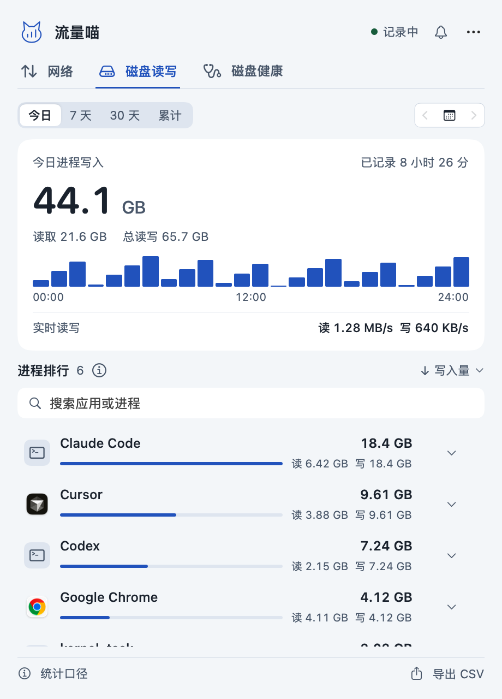
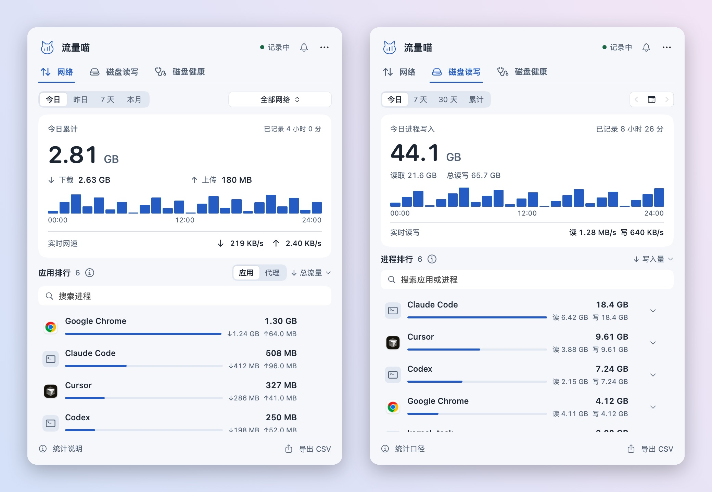
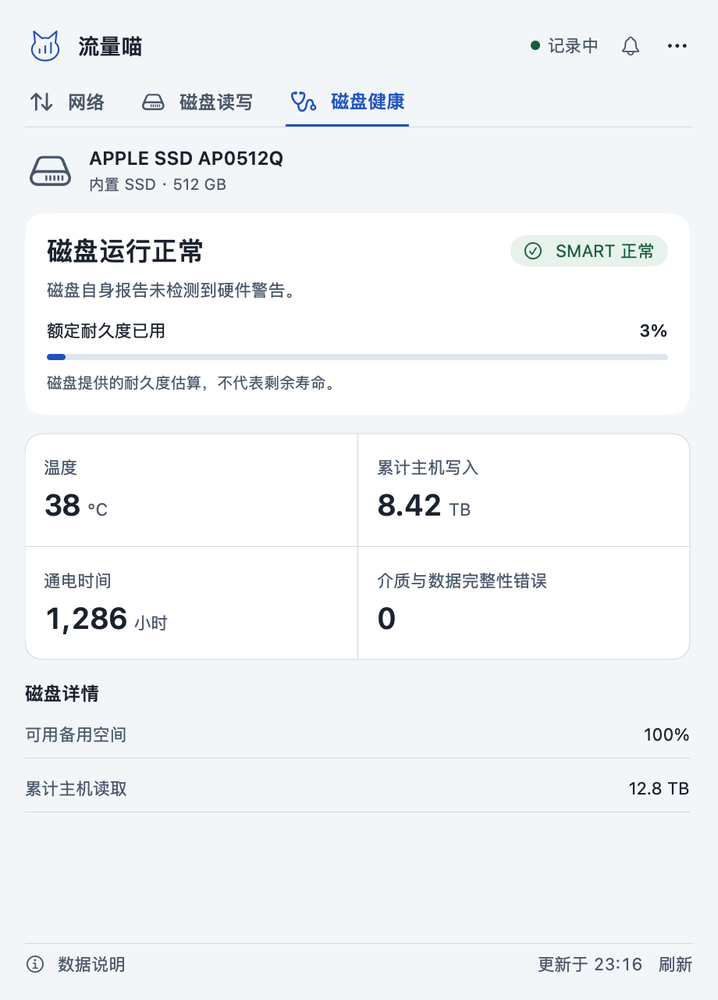
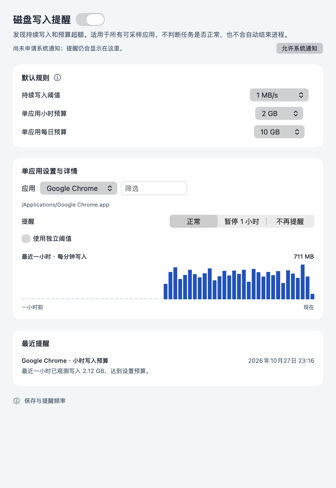
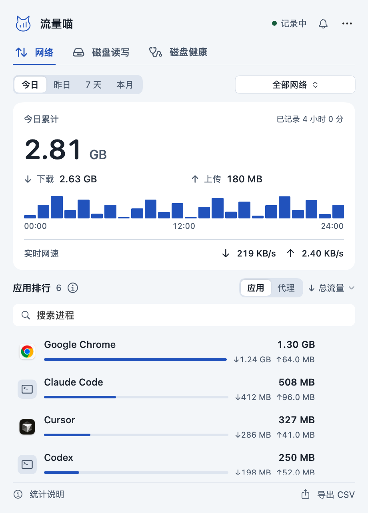
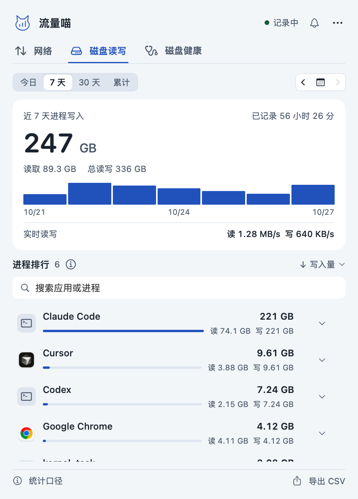
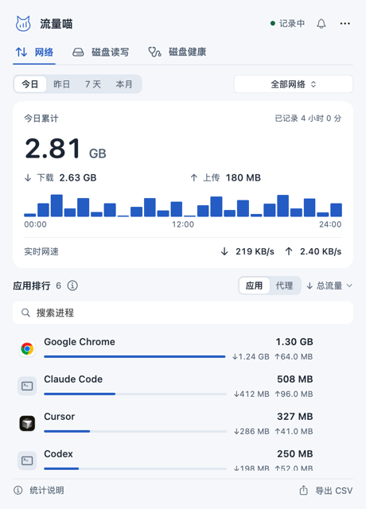

进程磁盘读写
今日、7 天、30 天、累计或任意一天。按写入、读取或总读写排序，可搜索，点击一行查看路径。

Agent 整天重建索引、缓存和 node_modules。流量喵把每个进程的网络流量和磁盘写入并排排行。

Codex、Claude Code、Cursor、构建工具与 Spotlight 都会按应用列出读写总量，辅助进程自动合并。
把进程写入与 SSD 自身报告的累计主机写入、温度和额定耐久度已用放在一起看。
三个标签，不用管理窗口。打开面板，看完就关。
今日、7 天、30 天、累计或任意一天。按写入、读取或总读写排序，可搜索，点击一行查看路径。

今日累计、网速与磁盘读写速度可分别开关。
状态、温度、累计主机写入、额定耐久度已用、通电时间与介质错误。原生读取，无需 smartctl。

持续高写入、单应用小时或每日预算超额时提醒你。任意应用可暂停或不再提醒。

今日、昨日、7 天或本月，按真实 Wi-Fi 名称筛选。代理与 VPN 单独列出，避免重复计算。

每 10 秒采样、每分钟保存，回头查看，不用猜。

网络、磁盘读写、近 7 天趋势与磁盘健康，和面板里看到的一样。

需要 Apple Silicon 与 macOS 13 或更高版本。
从 GitHub Releases 获取最新 ZIP，不足 1 MB。
解压后把流量喵拖进“应用程序”文件夹。
打开流量喵，点击菜单栏图标。前 10 秒用于建立统计基线。
当前为临时签名、尚未公证。若 macOS 阻止首次打开，可在“系统设置 › 隐私与安全性”中允许，无需关闭系统安全功能。
不会。历史保存在本机的 ledger.json 与 disk-ledger.json 中，无需账号，没有遥测，不记录通信内容。只有你手动检查更新时才会访问 GitHub。
每 10 秒采样一次，每分钟保存一次，只在打开面板时加载界面。SMART 信息按需读取，之后约每 10 分钟刷新。
不完全等于。进程写入来自 macOS 计数器，不是 SSD 闪存的物理写入。用它找出写入最多的应用，用健康页查看磁盘自身报告的数据。
不能。总量来自物理网卡，包含局域网与协议开销；短暂进程和网络切换可能漏计，适合作为参考，不能替代运营商账单。
不会。选择“检查更新”，再点“安装并重启”。流量喵会下载并校验安装包、替换自身，保留历史和设置；失败时自动恢复旧版。
都有。在设置中可把语言切换为 English。另有独立仓库的 Windows 版。
流量喵免费、开源，利用业余时间开发。如果它帮你揪出过失控的进程，欢迎赞助支持后续更新。